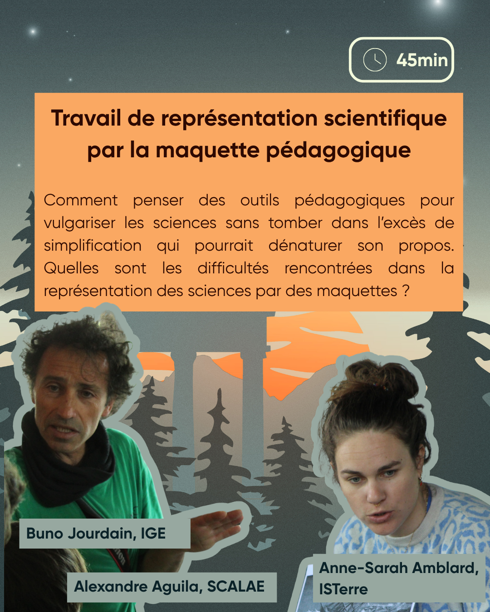

Travail de représentation scientifique par la maquette pédagogique
Résumé
Comment penser des outils pédagogiques pour vulgariser les sciences sans tomber dans l'excès de simplification qui pourrait dénaturer son propos. Quelles sont les difficultés rencontrées dans la représentation des sciences par des maquettes ?
intervenant·es
Bruno Jourdain est chercheur à l'Institut des géosciences de l'environnement (IGE). Il et à l'initiative de plusieurs projets de médiations scientifiques dans son laboratoire : comme des maquettes pédagogiques ou l'organisation chaque année de l'évènement "les Tribulations Savantes" .
Alexandre Aguila est concepteur d'outils pédagogiques et maquettiste. Il commence d'abord à fabriquer des modules pour animer des ateliers chez les petits débrouillards, avant de lancer en 2010 son activité indépendante sous le nom d'Interac'Sciences qui deviendra plus tard SCALAE.
Anne-Sarah Amblard est doctorante à l'Institut des Sciences de la Terre (ISTerre). Elle construit un premier prototype de maquette de banquise pour l'évènement "les Tribulations Savantes" de 2024 avec SCALE avant d'en réaliser la version finale en 2026.
